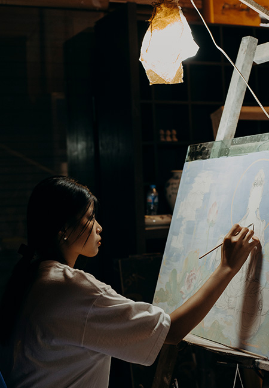
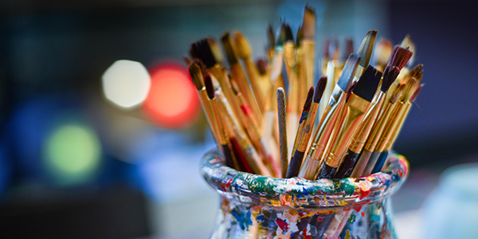
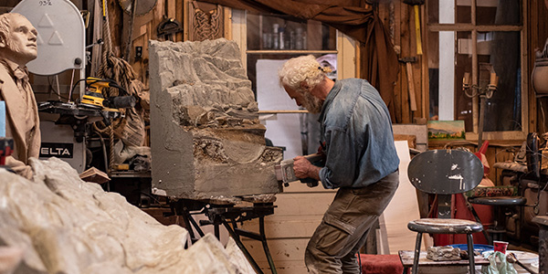

미술장학제도
미술계를 선도하는 작가들을 발굴 및 지원하여
미술문화 발전의 기반을 만듭니다
신진작가를
발굴하고 지원합니다.
-
금호문화재단은 꾸준히 젊고 유망한 작가들을 발굴, 지원하고 있습니다. 금호문화재단은 금호미술관과 금호창작스튜디오 두 기관을 통해 한국미술계를 선도하는 작가들을 지원하고 있습니다.
- 
-
- 신진작가
- 개관 이래 꾸준히 유망한 작가들을 발굴 및 지원하고 있습니다.
-
- 지원
- 지원 사업에 선정된 작가들은 다양한 창작활동을 지원받습니다.
-
- 공모전
- 공모전은 잠재력있는 작가들을 발굴, 미술의 새 지평을 엽니다.
-
- 77
- 2021년 상반기까지 총 77명의 작가가 지원 받았습니다.
금호영아티스트 프로그램
- 
- 
-
금호문화재단을 대표하는 금호영아티스트 프로그램은 2004년 박강자 당시 관장의 제안으로 탄생했습니다. 이후 금호영아티스트 프로그램은 15년 넘게 이어지며 ‘미술계 스타의 산실’로 자리매김하였습니다.
-
만 35세 이하(공고일 기준)인 한국 국적 작가는 장르에 상관없이 금호영아티스트 프로그램에 지원할 수 있습니다. 3차에 걸친 심사에서 선정되면 금호미술관에서 개인전을 열 기회를 얻을 수 있습니다.